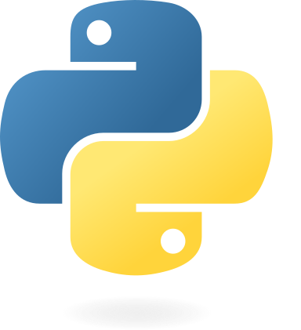

Lenguaje Python.
Descripción.
Python
es un lenguaje de programación de alto nivel, interpretado, multiparadigma y de propósito general. Fue creado a finales de los 80 por Guido van Rossum y ha experimentado un crecimiento impresionante desde entonces. Se ha convertido en uno de los lenguajes de programación más populares y ampliamente utilizados en el mundo debido a su enfoque en la legibilidad del código y la simplicidad sintáctica.
Es un lenguaje de programación poderoso, versátil y fácil de aprender, que se ha ganado un lugar destacado en la industria debido a su simplicidad, legibilidad y la abundancia de bibliotecas que facilitan el desarrollo en diversos campos.
Características.
Legibilidad del código:
Python
se destaca por su sintaxis clara y legible. Utiliza el espaciado en lugar de llaves como delimitador de bloques de código, lo que obliga a los programadores a mantener una estructura de código limpia y fácil de leer.
Multiparadigma:
Python
admite varios paradigmas de programación, incluidos la programación orientada a objetos, programación funcional y programación imperativa.
Interpretado: A diferencia de los lenguajes compilados,
Python
no requiere un paso de compilación explícito antes de ejecutar el código. El intérprete de
Python
lee el código fuente y lo ejecuta directamente.
Tipado dinámico:
Python
es un lenguaje de tipado dinámico, lo que significa que las variables no están vinculadas a un tipo específico y pueden cambiar de tipo durante la ejecución del programa.
Amplia biblioteca estándar:
Python
viene con una biblioteca estándar extensa que proporciona una amplia gama de módulos y paquetes para realizar tareas comunes, como manipulación de cadenas, manejo de archivos, acceso a bases de datos, desarrollo web y mucho más.
Portabilidad:
Python
se puede ejecutar en una variedad de plataformas, incluidas Windows, macOS, Linux y otros sistemas operativos.
Comunidad activa: La comunidad de
Python
es enorme y vibrante. Hay una gran cantidad de bibliotecas y frameworks de código abierto desarrollados por la comunidad que hacen que la programación en
Python
sea aún más poderosa y fácil.
Usos.
Desarrollo web:
Python
se utiliza ampliamente para crear aplicaciones web. Frameworks populares como Django y Flask permiten desarrollar sitios web y servicios web de manera rápida y eficiente.
Análisis de datos:
Python
es una opción popular para la manipulación y el análisis de datos. Las bibliotecas como Pandas y NumPy proporcionan herramientas poderosas para trabajar con datos estructurados y realizar cálculos numéricos.
Inteligencia artificial y aprendizaje automático: El aprendizaje automático ha crecido enormemente en popularidad, y
Python
se ha convertido en uno de los lenguajes principales para implementar algoritmos de aprendizaje automático y redes neuronales gracias a bibliotecas como TensorFlow, Keras y Scikit-learn.
Automatización y scripting:
Python
es ampliamente utilizado para la automatización de tareas, scripting y procesamiento por lotes debido a su facilidad de uso y eficiencia.
Aplicaciones de escritorio y GUI: Con bibliotecas como Tkinter y PyQT,
Python
permite crear aplicaciones de escritorio y aplicaciones con interfaces gráficas de usuario (GUI).
Desarrollo de juegos:
Python
también se utiliza en el desarrollo de juegos, ya sea para la creación de lógica del juego o para el desarrollo de herramientas y scripts relacionados con el juego.
